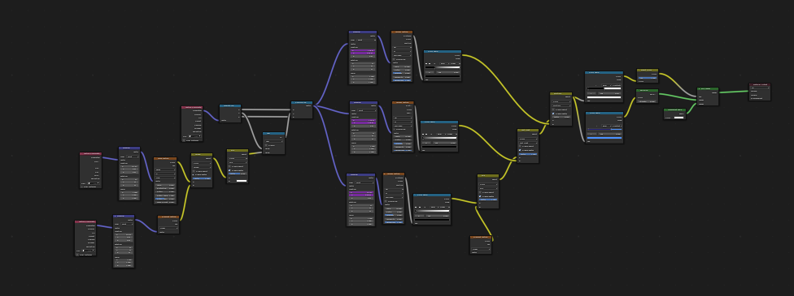
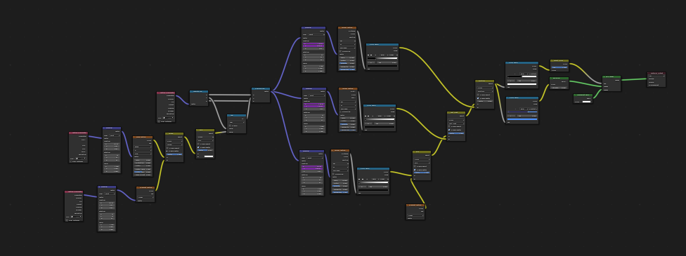
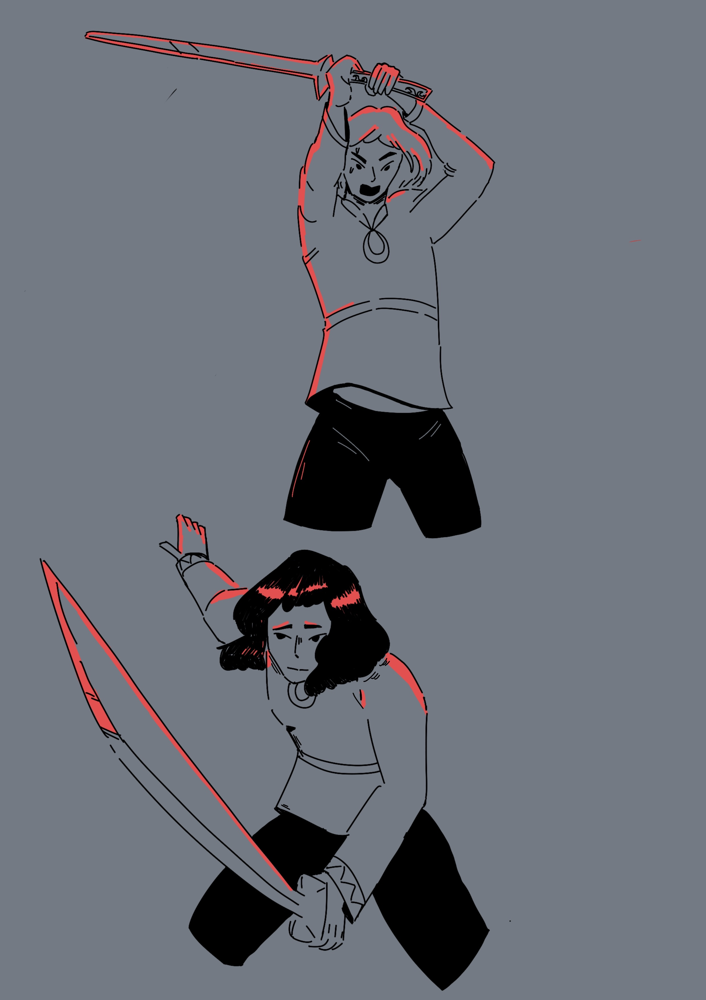
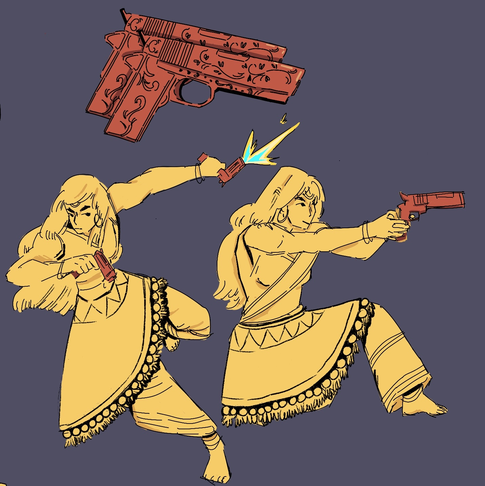
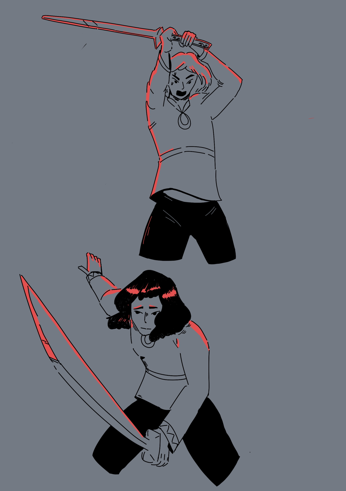
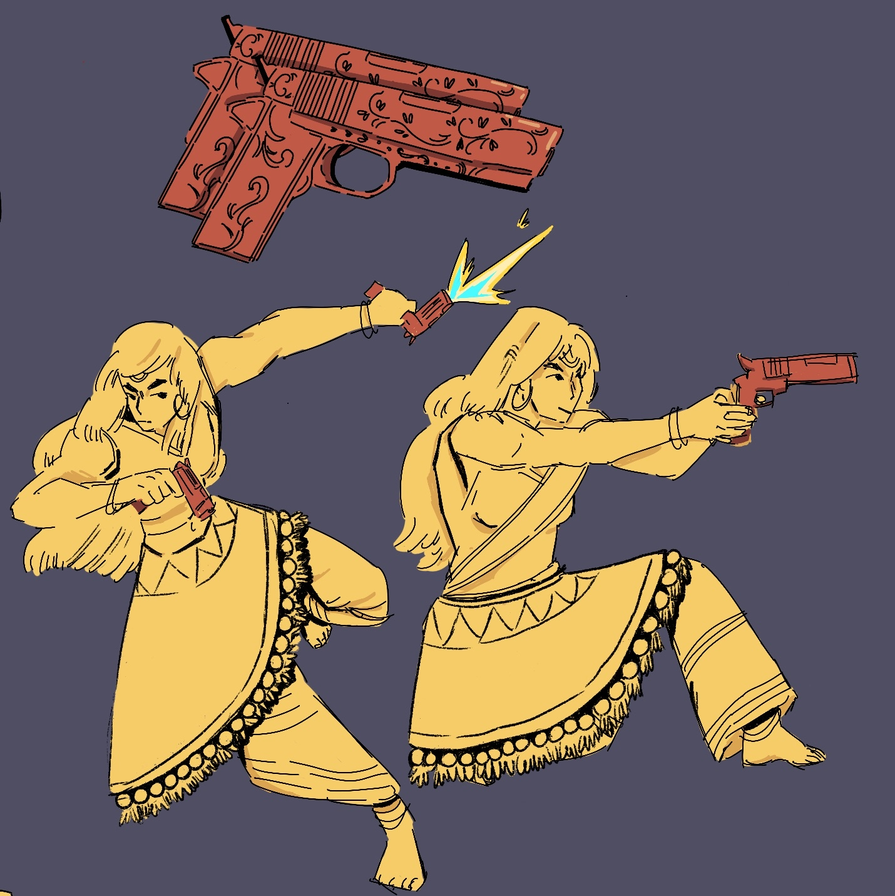

Identity

while choosing a brief i needed to debate a lot of things with myself. I strongly prefer briefs that allow for versatility, and while every project can be taken in any direction, some breifs inherantly encourage more diverse thinking. For example the belonging brief on the surface level is about seeking a community and fellowship, but belonging can easily be twisted to be something about feeling lured and trapped, such as in a cult or abusive relationship. Belonging also spoke to me on a personal level as I travelled a lot as a child, and never really "put my roots down" in any one place. which has its benefits, but also comes with the fear of never fitting in with a group, not sharing enough culture; to not have grown up in britian and be unable to relate to british people my age, as well as never really adopting indian culture. But I was also enticed by the digital identities brief, as curated and categorised personalities are very interesting to me. This project too could easily be used to frame digital identities as something negative, but what about a positive spin? maybe about how out digital selves can allow for exploration of identity and self actualization. This was another relatable breif, since my online identity is what allowed for me to have consistent friends while I moved around, but also allowed for me to express my gender beyond what i looked like or was percieved, letting me discover who I was. So i was torn between these two projects; and decided id develop both for a while until I take one further.


While i enjoyed the cult idea and the potential of depicting the scarier parts of being in a collective, or "in group" without even realising, making it more fantastical and campy felt a bit insensitive? especially after reading Cultish and learning about the langauge of cults, i wanted to do something more serious with the idea, but that didnt feel personal enough to me, or a very exciting story and so i decided to carry over some themes which i liked in my development so far, which was a dark forest, to represent the unknown, and to maintain the idea of belonging even while working on the other breif idea, which would be about hyperreality and what the distinction from real and digital identities even was.


Around this point is when I began merging the 2 breifs, but it still leaned more towards belonging in its symbolic meaning, and digital identities was step towards inspiring my idea of duality, reality and internal battle which fed into belonging heavily. And so it is here i chose to stick with the Belonging breif.

I began by changing my projects visual style to be a contrast to the setting ive established. The place this story happens in is a dark, grimy, gloomy forest, and so i wanted to add urban styled characters, to show how out of place it feels sometimes when your identity and your world dont easily coexist. the images i used as inspiration are a mixutre of pirmary and secondary that i collected from fashion designers, photographers and my own pictures.


This challenge put fourth from Kristian was A STRUGGLE. I specifically pride myself on being adaptable and I love changing style, feelings, colour, everything about my work from project to project; because i believe art needs to be adaptable to best suit the story its trying to tell. And to to make work that defined me as an artist was really hard; right now im doing a creepy gloomy project, but for the next one i could be doing something cute and whimsical, and so i really didnt know what to do for this. in the end i simply created a piece of work that suited the current work, because at that moment, it was me. And if i were to change this for the next image i made i wouldnt be penalized for it or anything, so there was no use in paralyzing myself with the question "what is my art" when my art aims to be diverse.


I was hitting a roadblock around this point, and didnt know how to further my project, and so i simply went for style over substance, to make something visually appealing and see how it could feedback into my project. although i do believe that the hard lighting noir style of visual would work for the mysterious and eerie tone of my project i had no reason to pivot so hard from the creepy forest concept which i think still worked just as well if not better since i had developed it more.


I think i've really hit something i love with this new development, i wanted to bring back some of the personal reason i wanted to do belonging; about how my culture has effected my idea of who i am. Being an immigrant i had a tough time knowing where i belonged, and when i felt like i found a space for me, i felt like i needed to supress other parts of my to stay there which made me feel fake. And so for the development of this project i wanted to design Indian characters, specifically women, who would be battling with weapons in the dark forest. This story would be about inner conflict, and fighting yourself without even knowing why, to the point of exhaustion, in the attempt to "kill" parts of yourself you deem lesser than. I think i want the characters to only wield guns (an idea that came from the noir theme i worked on before) as that would be more intriguing, but i think melee weapons could add to a characters personality, such as they use melee weapons because they want to be up close and personal, they want to KNOW theyve finished the job when they kill thier opponents.


 

I have decided that the outcome i want for this project is to be an animation, potentially an animated series idea? and so i did some quick animation tests as well as tests in Blender to make a 3d model to try and either animate, or create a sort of "skeleton" for me to animate over the 3d models in 2d to make animation easier and add an interesting visual style. The 3D modellling didnt work out as i dont have enough experience, but want to improve as i conitnue this year to attempt it again later on in another project, as creating 3d models for animation and games is something i would love to do as a career. I also messed around with Blenders shaders, to create a very interesting fire animation as i had a scene in mind for a forest burning down; and the cube in the cente for me thinking of burning marble and how my story could take place on a burning stage of marble? when i discussed this idea with Kristian he advised me that i already had an interesting and well thought out setting, so I didnt really have a reason to change it. And so i stuck with the dark forest as i thought it was the best choice

These were the character designs i derived from my initial sketches, and while im fairly happy with the weapons, their outfits dont feel over the top enough, ornate and campy the way i usually love designing my characters. This was mainly because the idea of animating a complex design was really unfeesable and scary, and so i tried keeping the designs simple as would be expected of 2d, especially hand drawn animation in industry. but as I kept working i decided i didnt want to animate myself, and i would rather create "pitch work", concepts, stories than the actual animation itself, and so wanted to go further with these designs.
doing these storyboards was surprisingly fun, but it made me realise i didnt want to do a short action packed short animation, i wanted to really tell this story, and make it indepth and emotional, which would need more than a 2 min aniamtion, so i started thinking of making a pitch bible as the final outcome of this project for a short animated series around my idea.
 



I was overall happy with the yellow characters design, i thought it allowed for dynamic clothing to be moving, i liked her weapons and thought they reflected her personality, and overall she seemed fun visuallt but the red character felt far too simple and shallow, and so i did a bit of experimentation with more emotional poses and a sword and i think the close range and heavy movements required for it worked well with a more emotional younger character. i also added more "indian-ness" to her design but still wanted to be modern looking rather than traditional.
Pitch bible character pages attempt